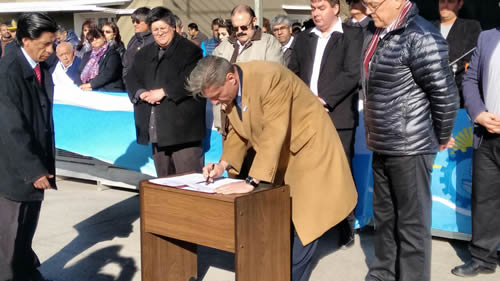
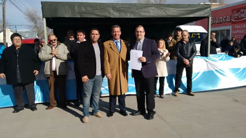

Real Chubut - Agencia de Noticias


Arcioni: “Este Gobierno vino a unirnos y para hacer del esfuerzo compartido su emblema”

Así lo señaló el vicegobernador al encabezar el 81º aniversario 81 de Río Mayo.
El vicegobernador del Chubut, Mariano Arcioni, presidió este lunes en Río Mayo el acto central por el aniversario 81º aniversario de esa localidad, donde remarcó que esta tercera gestión del gobernador Mario Das Neves “vino a unirnos y hacer del esfuerzo compartido su emblema”, remarcando que “no va a apartarse ni un milímetro de ese objetivo que es el crecimiento parejo de todas las comunas e intendencias, sin diferencias o condicionamientos para nadie”.
Arcioni encabezó el acto acompañado por el intendente interino, Gustavo Hermida, en reemplazo de Gustavo Salazar, en uso de su licencia médica, asistiendo además el intendente de Sarmiento, Ricardo Britapaja, la presidenta de la comuna Facundo, Liliana Prieto, el subsecretario del Ministerio de Familia, Cristian Spíndola; de Corfo, Javier Maraboli y el director de Petrominera Chubut, José Luis Esperón, entre otros funcionarios provinciales y locales. También, cabe destacar que del acto formó parte una numerosa columna de trabajadores, nucleados en el Sindicato de la UOCRA.
Homenaje y nuevas energías
Antes del desfile realizado por diversas fuerzas vivas de la ciudad, Arcioni agradeció las presencias y la posibilidad de representar una vez más, al gobernador Mario Das Neves, “en este homenaje que cada 22 de agosto, rinde culto a los pioneros y su legado histórico”.
En su discurso mencionó “venir con nuevas y energías renovadas” por el regreso del primer mandatario provincial, quien una vez más, “nos dejó muchos mensajes para reflexionar, y nos sigue dando muestras de entereza, compromiso y una mirada superadora a la que muchos debieran imitar”.
Desde el palco ubicado frente a la plaza principal, el vicegobernador destacó: “vengo a ratificarles un mensaje claro y contundente del Gobierno que formo parte, y es que cuenten con esta gestión” afirmó y además, citando las palabras del último sábado por parte del gobernador, Arcioni subrayó que “venimos a hablar de vida” y esto tiene que ver con “preocuparnos por el acceso a la vivienda de nuestra gente, por proveerle los servicios públicos, por construir puentes, hospitales y centros culturales; y esto en definitiva, habla de comprometernos por el otro, con grandeza, desapego y compromiso”.
En otro pasaje de sus palabras, el presidente de la Legislatura ponderó el acompañamiento de la gente por “todo el Chubut” y esto obedece a que “no vinimos a mentirles ni a decirles cosas que no son o falsas expectativas, sino a trabajar con todos, con máxima responsabilidad, para salir adelante y poder superarnos desde lo humano y lo político, como nos enseña nuestro conductor”, precisó.
Arcioni felicitó a los vecinos de Rio Mayo “por estos 81 años” y los invitó a que “nos acompañen, porque este Gobierno vino para hacer cosas importantes por los chubutenses y no va claudicar en esta tarea”.
Al finalizar, el vicegobernador expresó: “No duden ni un segundo que estamos para acompañarlos en su crecimiento, y la realidad nos impone el sacrificio común, para llevar a Chubut al lugar que se merece, y es el horizonte que aspiramos cumplir y al que no vamos a renunciar”.

Obra pública en marcha
A su turno, Hermida reflejó su satisfacción por “tener nuevamente en la provincia, al gobernador Mario Das Neves” a quien le deseo una pronta recuperación, como así también para el jefe comunal titular, Gabriel Salazar.
El intendente señaló que “hace 81 años con el sacrificio de los pioneros y antepasados forjamos un presente” y agregó que “hoy nos toca vivir una realidad distinta, con dificultades económicas y financieras, y en esta situación es cuando desde el Estado, se debe utilizar el ingenio y la creatividad para sortear los inconvenientes”.
Dentro de los objetivos propuestos, Hermida señaló que “pondremos nuevamente en marcha la obra pública junto con la provincia y su financiamiento, y esto significará mayor mano de obra y por ende, mayores recursos genuinos para el circuito económico local”.
Para culminar, resaltó el trabajo de quienes lo ayudan “en el trabajo día a día” y aseveró que “no es una tarea para nada sencilla, representar a las necesidades de mi pueblo, y asumo este compromiso sin intereses ni ambiciones personales, entendiendo que estamos de paso en la función pública, y el tiempo que nos toque, debemos dar lo mejor”, culminó su exposición, para dar inicio a algunas de las actividades previstas a esta fecha tan significativa para la ciudad.
ENTREGA DE ASISTENCIA
En este marco, la presidenta del Concejo deliberante local, Ana Wolf realizó la entrega de la declaración de cesión de terrenos al presidente de la cooperativa agro-ganadera Río Mayo Limitada, el señor Jorge Dasovich.
Asimismo, y representando al Ministerio de Familia, Cristian Spindola entregó el compromiso de asistencia por equipamiento (1 lavarropas, bajo mesada y placares) al albergue estudiantil de esta localidad.
Así también, el vicegobernador Mariano Arcioni y Javier Maraboli, desde Corfo, hicieron lo propio, entregando a los representantes de la cooperativa local –y en carácter de comodato-, un tractor modelo 6125 DT, motor Deutz, ideal para realizar las tareas comunes con emprendimientos agrícolas ganaderos; sumadas a unas cien estacas de gran utilidad para las labores campestres.
PUBLICIDAD